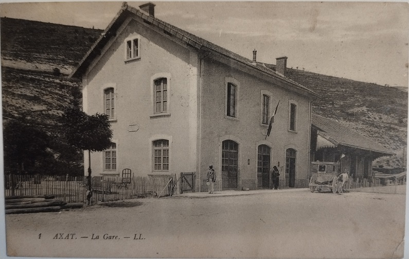
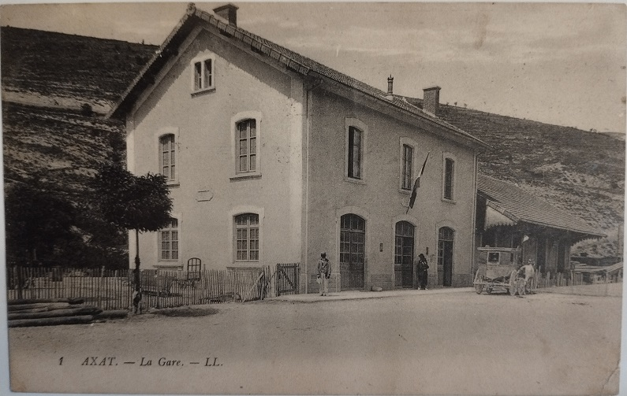
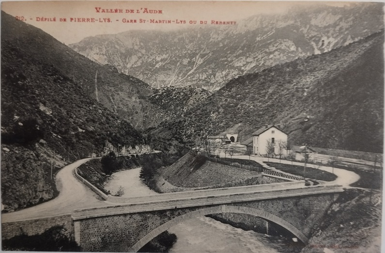
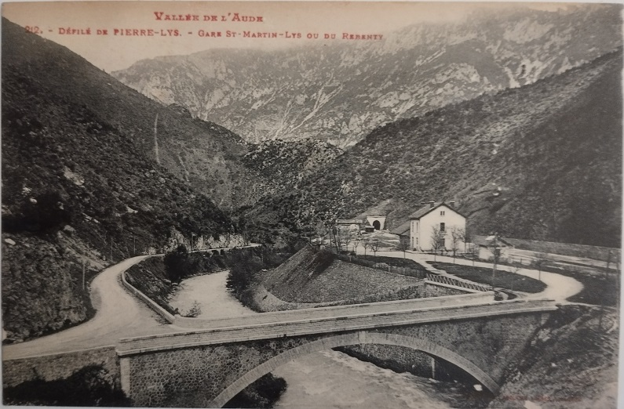
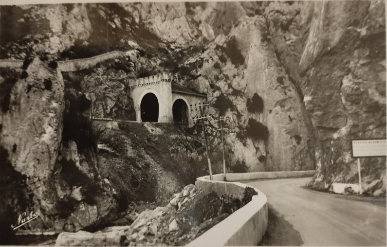
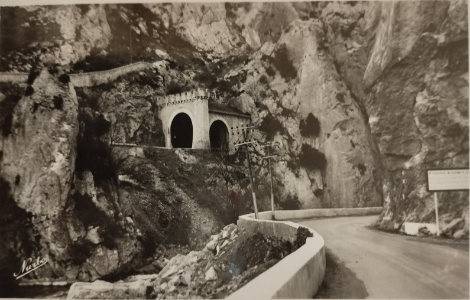

Pour alléger la page sur l'historique de voie ferrée, je crée cette annexe avec les cartes postales anciennes des collections de Paul Dumanois, Thierry Meynier, facebook du TPCF


.png)


 



 



Photos autres de la voie à Saint Martin
![Saint-Martin-Lys (Aude) : vallée de l'Aude (bâtiment industriel) / J.-E. Auclair photogr. - [entre 1920 et 1950]. - Photographie (1900/1950) p1](../../complement3/archives-Haute-Garonne/images/Saint-Martin-Lys%20-%20vall%C3%A9e%20de%20l'Aude%20-%20gare%20-%20J-E%20Auclair%20photogr%20-%20entre%201920%20et%201950%20-%20Photographie%201900-1950.png)
![Saint-Martin-Lys (Aude) : ligne de chemin de fer / J.-E. Auclair photogr. - [entre 1920 et 1950]. - Photographie (1900/1950) p1](../../complement3/archives-Haute-Garonne/images/Saint-Martin-Lys%20-%20vall%C3%A9e%20de%20l'Aude%20-%20ligne%20de%20chemin%20de%20fer%20-%20J-E%20Auclair%20photogr%20-%20entre%201920%20et%201950%20-%20Photographie%201900-1950.png)
Photos de J.-E. Auclair (entre 1920 et 1950) des archives départementales de la Haute-Garonne


 



Cliquer directement sur la photo pour accéder à la notice correspondante.
Locomotive COFERNA DE 1 (construite en 1949-1950) en gare d'Axat - Photographe Gilles Fraudin (2021)
Viaduc Saint-Georges - Vue générale - série "Touring Club de France"
Gare de Quillan (construite en 1881) - Photographe Alice de la Taille (2019)